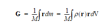

| |
Mass Properties |
| <<< Enquiry And Output Functions | Chapters | Calculating Minimum And Maximum Distance >>> |
This chapter provides information on using the function PK_TOPOL_eval_mass_props to evaluate mass and other properties such as area, volume, length, centre of gravity and moment of inertia. PK_TOPOL_eval_mass_props can calculate the mass properties of a single entity or a collection of them, if all entities in the collection are of the same type. It also uses density attributes that are attached to the entity or entities. See Chapter 96, “Attributes” for more information on attributes.
For an example of this functionality, see the code example in the
C++\Code Examples\Inquiries\Model
Analysis\Mass
Props
folder, located in
example_applications
in your Parasolid installation folder.
PK_TOPOL_eval_mass_props receives the following arguments:
|
A control of how much work must be done to calculate the requested mass properties. It must lie in the range of 0.0 to 1.0. In practice, values within the range of 0.99 and 0.999999 are the most useful. These values are not percentages but an indicator of the number of iterations in the calculation. |
|
|
A set of options that evaluate mass properties of a given set of topological entities. See Section 28.1.3, “Summary of options” for an introduction to these options. |
A number of arguments are returned by the function providing information on the mass properties of the function. See Section 28.1.2, “Returned arguments” for more information.
PK_TOPOL_eval_mass_props returns the following arguments:
PK_TOPOL_eval_mass_props contains a wide variety of options that enables you to control the result of the operation. The following table summarizes the options that are available, full details of which are given in the rest of the chapter.
|
Which mass properties are calculated. See Section 28.2, “Determining the mass” for more information. |
|
|
Whether to calculate the periphery of the entity. See Section 28.3, “Calculating the periphery” for more information. |
|
|
What kind of bound on accuracy to return. See Section 28.4, “Bounds” for more information. |
|
|
Whether to use input entities separately or as a single solid. See Section 28.6, “Dealing with local density attributes” for more information. |
|
|
Whether to use the alternative faceting method to calculate mass properties. See Section 28.8, “Using the alternative faceting method” for more information. |
|
|
The chordal tolerance for facets used in the alternative faceting method. See Section 28.8.1, “Chordal tolerance” for more information. |
|
|
How to treat the behaviour when local density attributes are attached to topologies with the same topological dimension as the maximum of topologies passed in as |
|
|
How to treat the behaviour when local density attributes are attached to topologies with lower topological dimension than the maximum of topologies passed in as |
|
|
An array of transformations used to transform topologies passed into |
|
mass_eq_0 |
How to behave when encountering topology that has zero mass and amount. |
n_parts_with_scalesparts_with_scalesscale_factorsoutput_scale_factor |
You can use these options to assign relative scale information between the provided topologies of models created at different scales. Each part supplied in
scale_factors
are supplied then the
topols
array can only contain bodies or assemblies.
You can also choose to specify the scale to be used on the output results using the For more information on scale factors and working with parts of different scales, see Chapter 23, “Distant and Multi-scale Modelling”. |
You can find a number of mass properties of an entity using the
mass
option. This option takes the following values:
|
Find the centre of gravity in addition to the mass and |
|
|
Find the moment of inertia in addition to the mass, |
The mass of an entity is used to find the centre of gravity, which in turn is needed to calculate the moment of inertia.The default value, PK_mass_m_of_i_c, will find the mass,
amount
, centre of gravity and moment of inertia for the entity.
|
Note: Mass properties can be calculated on topological entities that do not have density attributes. These entities will be treated as if they had a density of 1. |
This option enables you to calculate the total
amount
of the boundary of the selected topologies of an entity and it takes the following values:
|
Calculate the periphery of the entities. This is the default value. |
For general bodies, only the periphery of entities with a face or a solid region (i.e. dimension two and three) can be calculated. For regions, faces and edges, the periphery is calculated as the sum of the peripheries of each individual topology. Figure 28-1 shows the periphery of two adjoining faces of a unit cube. For these two faces the periphery is calculated to be 8 times the length of an edge in these two faces.
Figure 28-1 Calculating the periphery of two selected faces.
You can request error bounds information using the
bounds
option.This option takes the following values:
|
The error range is given by a value plus or minus a single modulus. |
|
It is strongly recommended that you request error bound information when calculating mass properties. The error bounds provide a very valuable indicator as to the level of accuracy of the calculated values.
When comparing mass property calculations for identical or similar bodies within or across Parasolid versions, it is essential that the application requests and stores error bounds along with the calculated
amount
. When comparing the
amount
returned by two different versions of the software it is essential that the error bounds are taken into account in such comparisons. For an identical model it should always be the case that the ranges given by the
amount
+/- error bounds overlap, but it should not be considered a difference if the
amount
from version X does not lie within the range from version X+1 or vice versa.
The
single
option of PK_TOPOL_eval_mass_props enables you to treat an array of faces or sheet bodies as a single solid body which can then be used to calculate the required mass properties, with the exception of its mass. Density attributes that are attached to faces or edges are ignored and the moment of inertia is calculated with an assumed density of 1. This option also allows you to calculate the mass properties of a set of an array of unsewn sheets (which when sewn would form a closed volume) as if they were sewn together to form a single body.
Figure 28-2 Body with a complex void
Figure 28-2 shows a block with a complex void. To calculate the negative volume of the void, the four faces of the inner cuboid and the six faces of the cylinders are supplied along with the
single
option. To calculate the approximate volume of one of the cylindrical voids, you need to supply the main face and the two planar faces of the cylinder along with the
single
option. Using the
single
option in this way, the cylinder will be treated as a single solid entity for the calculations.
In Parasolid, density attributes that are attached to regions, faces, edges or vertices are referred to as local densities. See Chapter 96, “Attributes” for more information on how attributes are used in Parasolid. As the name suggests, local densities can be used on specific local topologies to selectively alter the interpretation of the global body density in that area. For example, you may want to let every face but one in a body have a certain density, and a higher density on a specific face. This can be achieved by attaching a body density to the part and a face density to the specified face. The effect of local densities on mass properties calculations is controlled by the options
same_dim_density
and
lower_dim_density
.
The values for both of these options are:
Figure 28-3 and its accompanying table shows the expectant mass of a cube of unit length sides when using these values. The body has a total body density of 7.0 attached to the body itself and a region density of 2.0 attached to the solid region inside the body. The volume of the body is 1.0.
Figure 28-3 Resultant Mass values using the
same_dim_density
option
Figure 28-4 and its accompanying table shows the expected mass of a cube of unit length sides when using
lower_dim_density
. The body has a body density of 7.0, an edge density of 1.0 and two face density attributes of 3.0 and 5.0. The volume of the body is 1.0.
Figure 28-4 Resultant Mass values using the
lower_dim_density
option
You can use the
transfs
option to calculate the mass properties of topologies with rigid transformations and reflection transformations. This option takes an array (of size
n_transfs
) of transformations that are applied to the topologies supplied in
topols
.
The
use_facet
option of PK_TOPOL_eval_mass_props is an alternative method that is primarily provided for the purposes of debugging when validating the results produced by the main parameter-space method. It is recommended that you use the default method instead of this faceting method, especially for complex models. No error bounds are returned with this method.
|
Note: This requires the model to be tessellated and the operation can take a considerable time to complete especially when tight facet tolerances are supplied |
With this option, a triangular facet mesh for each face referenced is generated, calculations are made on each facet and the results for all the facets are combined. The more facets you use, the more accurate the calculations will be.
Figure 28-5 and
Figure 28-6 illustrates using the faceting method with coarser facets and finer facets.You can also use the
facet_tol
option with this option. See Section 28.8.1, “Chordal tolerance” for more information on this.
Figure 28-5 Calculating the volume of a sphere using the faceting method
Figure 28-6 Calculating the volume of a sphere with finer facets
The
facet_tol
option allows you to supply the chordal tolerance for facets used in conjunction with the
use_facet
option. Setting this option gives you control over the facets used in the alternative faceting method.
This option is equivalent to the
curve_chord_tol
and
surface_plane_tol
as used by PK_TOPOL_facet_2.
Mass properties can also be calculated for general bodies and assemblies. The following table lists these as follows;
For assemblies, all body occurrences in the assembly and sub-assemblies are taken into account for the calculations. These occurrences must be of the same body type. For information on assemblies See Chapter 22, “Assemblies And Instances”.
You can use the mass_eq_0 option to control the behaviour when at least one of the supplied topologies has zero mass and amount. This option takes the following values:
|
Stop calculation and return an error when a topology of zero mass and amount is found. This is the default value. |
|
|
Calculate the mass properties of all input topologies, and return the total mass of all topologies whose mass is greater than zero. Topologies with zero mass and amount will be returned in the Parasolid Report Stream in a record of type PK_REPORT_record_type_3_c and status code PK_REPORT_3_mass_eq_0_c. |
For information about the Parasolid Report mechanism, see Chapter 11, “Using Reports”
Parasolid uses specific definitions for mass properties. These are as follows;
Mass is defined as the integral of the product of a body’s density and its
amount
when density is constant. The
amount
represents the quantity of matter in a body, which varies depending on the type of topological entity. For example, for a solid body the
amount
is the volume of the entity, for a sheet the
amount
is the area and for a wire body the
amount
is length.The density is obtained from the attached density attributes. If there is no density attribute attached, density has a default value of one. See Chapter 96, “Attributes” for more information on how attributes are used in Parasolid.
Mass has the following mathematical equation;
Centre of gravity is defined as the integral of the product of the density function at a given position with the position vector itself over the whole volume being considered. It has the following mathematical equation;
The Moment of inertia is defined as follows;
where r is the vector from the center of mass to a point in the volume v, is their outer product E3 is the 3X3 identity matrix and V is a region of space completely containing the object. In Parasolid, the inertia tensor matrix is defined from the moments of inertia as follows,
In Parasolid, the tensor returned is the moments of inertia about a point, where the point is the centre of gravity as defined in the standard Parasolid Cartesian coordinate system.
| <<< Enquiry And Output Functions | Chapters | Calculating Minimum And Maximum Distance >>> |